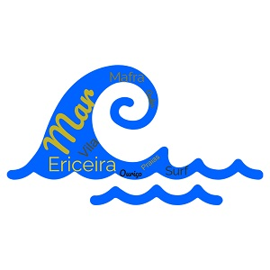

Ericeira - Onde o Mar é Mais Azul

Menu: Introdução |
Localização |
Multimédia |
Informações |
Home
Introdução
A Ericeira é uma vila turística situada a 35 km a noroeste do centro de
Lisboa, a 18 km de Sintra e a 8 km de Mafra. É uma freguesia portuguesa do
município de Mafra, conhecida pelos ouriços, um doce 🧁 habitual da terra,
e pelo mar ⛵.
É uma vila muito antiga, presumivelmente local de passagem e instalação
dos Fenícios.
Reza a lenda que o nome Ericeira significa, na origem, "terra de ouriços",
devido aos numerosos ouriços do mar que abundavam nas suas praias. No
entanto, investigações mais recentes apontam o ouriço-cacheiro e não o do
mar como inspirador do nome. Com a descoberta de um exemplar do antigo
brasão da Vila, hoje no Arquivo-Museu da Misericórdia, confirmou-se que o
animal ali desenhado é, de facto, um ouriço-cacheiro 🦔.
A região da Ericeira é bem conhecida em termos de surf 🏄 devido às ondas
🌊 da zona, que os surfistas dizem ser diferentes. Tem praias muito
conceituadas para a prática do surf como a praia da Ribeira d' Ilhas
(reserva mundial do surf), praia dos Coxos em Ribamar, entre muitas
outras.
A Ericeira é de resto a primeira reserva mundial 🌍 de surf da Europa e a
segunda do mundo.
É uma vila muito antiga, presumivelmente local de passagem e instalação
dos Fenícios.
Reza a lenda que o nome Ericeira significa, na origem, "terra de ouriços",
devido aos numerosos ouriços do mar que abundavam nas suas praias. No
entanto, investigações mais recentes apontam o ouriço-cacheiro e não o do
mar como inspirador do nome. Com a descoberta de um exemplar do antigo
brasão da Vila, hoje no Arquivo-Museu da Misericórdia, confirmou-se que o
animal ali desenhado é, de facto, um ouriço-cacheiro 🦔.
A região da Ericeira é bem conhecida em termos de surf 🏄 devido às ondas
🌊 da zona, que os surfistas dizem ser diferentes. Tem praias muito
conceituadas para a prática do surf como a praia da Ribeira d' Ilhas
(reserva mundial do surf), praia dos Coxos em Ribamar, entre muitas
outras.
A Ericeira é de resto a primeira reserva mundial 🌍 de surf da Europa e a
segunda do mundo.

Informações
| Demografia |
População |
12 368 hab |
| Densidade Pop. |
1 014,6 hab/km² |
| Geografia |
Área |
12,19 km² |
| Região |
Lisboa |
| País |
Portugal |
| Website |
https://jfericeira.weebly.com/ |